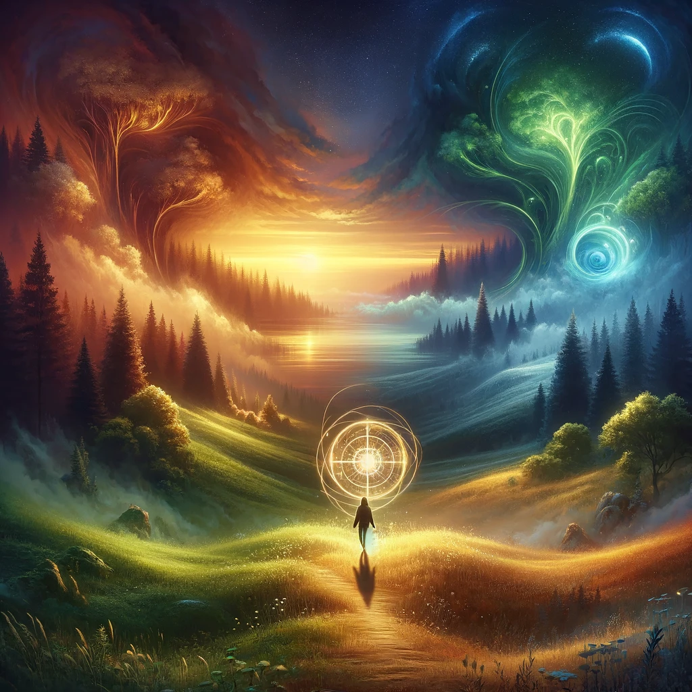

With no clear destination in mind, you let your feet carry you through the shifting landscape. The forest transforms into fields, then into valleys, each step taking you somewhere new and unexpected. You find yourself moving without hesitation, guided only by curiosity and the rhythm of the moment.
The compass in your hand spins gently, reflecting your own openness to possibility. The voice of the unseen echoes warmly:
“To wander without intention is to embrace the infinite. Each step you take opens a new door, a new chance to see what you’ve never seen before.”
As you move further, three distinct environments begin to take shape, each beckoning you with its unique mystery.

Which environment will you explore?